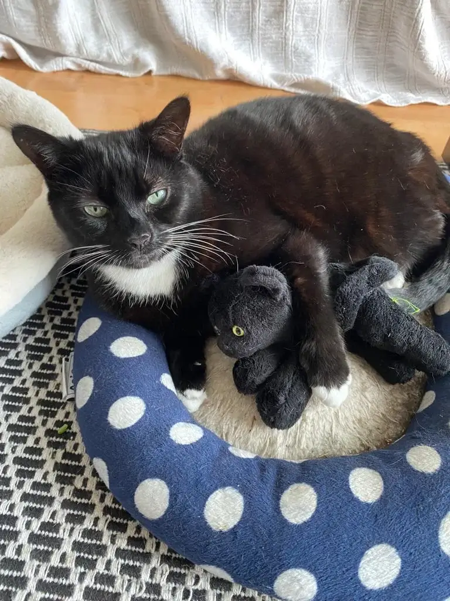
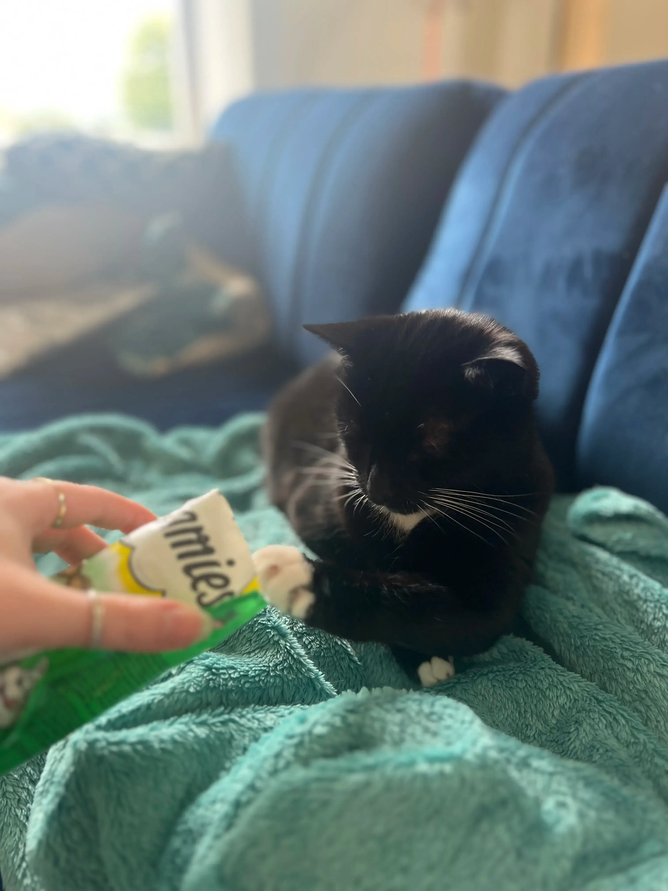
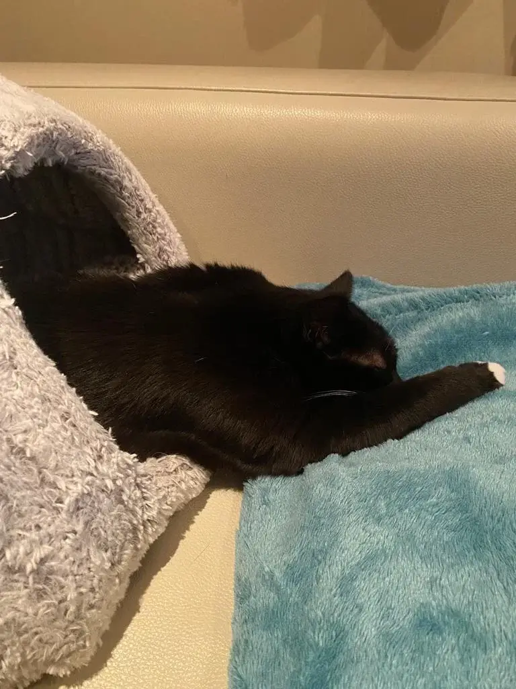
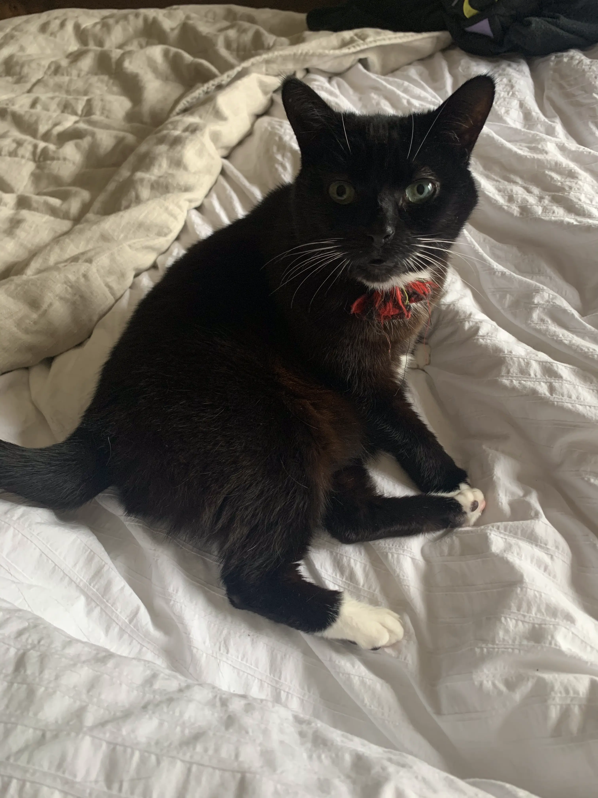
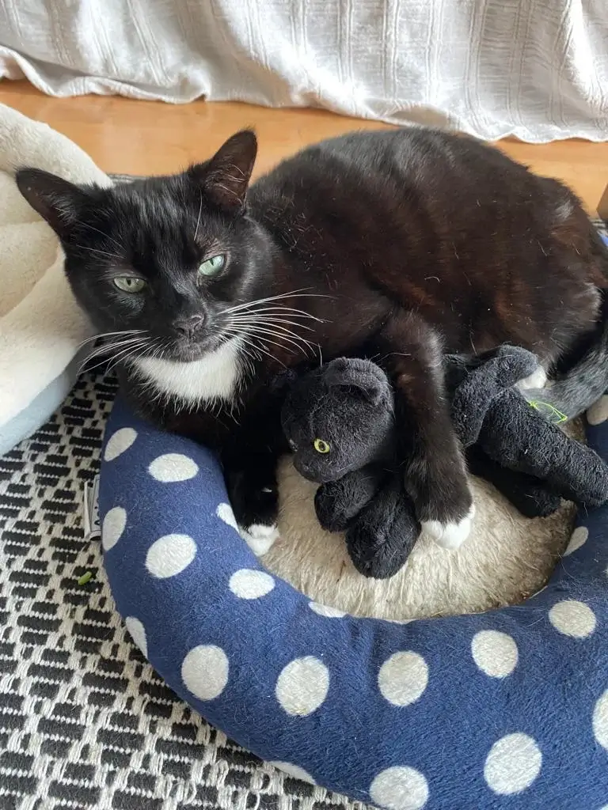
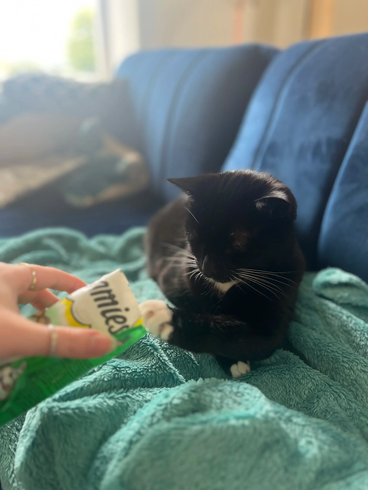
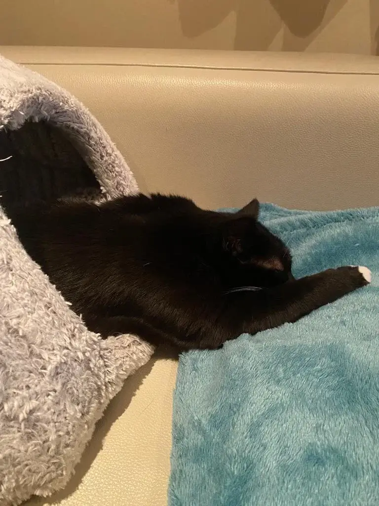
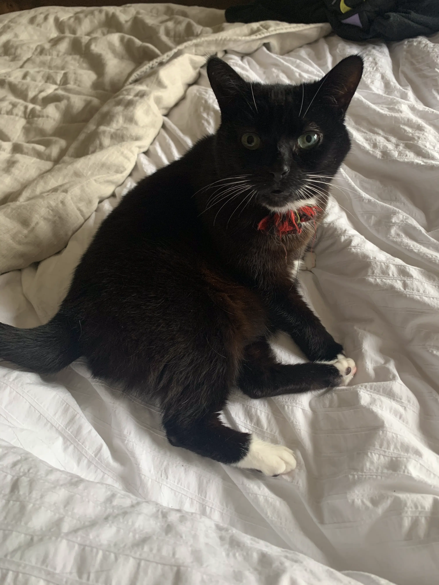

Story
After being in the cat rescue centre for 6 weeks, Salem found a new home with us. He was nearly pushed out of the way by a certain queen, but he was so adorable, we decided to have 2 cats instead of the planned one. Salem brought so much joy into our lives by being absolutely adorably quirky from the start. He is very smart - he can open doors from both sides and likes to feed himself elegantly from the packet. It took him a while to settle in with us. He soft pawed any door, whether open or closed, and he is prone to urinary tract infections that are stress induced. He is very clean and refuses to go to the litter tray unless it has just been attended to by his human. This is sometimes logistically difficult and when the service is lacking, Salem has been known to be resourceful by using the bath tub instead. It’s always clean and there’s plenty of room, it’s perfect! 🙀 He is our most gentle cat and comes in every morning when we wake up for cuddles, but otherwise prefers to keep to himself, avoid his arch nemesis (the dreaded hoover) and enjoy his stress free life of luxury. If he’s excited to see you, he will flop on the floor in front of you, but don’t be fooled, he only wants admiration, he’ll run if you try to rub his tummy. His favourite place is bed and he likes to keep a few options open, just in case he needs a change of scenery. I hope I come back as Salem in my next life!